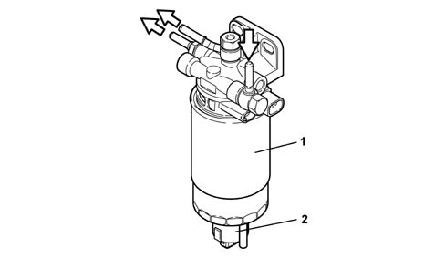

1044B FUEL FILTERS
- Path
- Descriptions > 10 ENGINE UNIT > 1044 FUEL CIRCUIT PUMP/S AND DEVICES > 1044B FUEL FILTERS
- Kind
- system description
- Applies to
- engines: 1.9 JTD 16V; all production periods
- Interactive page
- https://sloeber94.github.io/elrnDB-aGt/en/#/125000275
Applies to: engines: 1.9 JTD 16V; all production periods
COMPONENT DESCRIPTION
Fuel filter
The fuel filter is fitted in the engine bay on the bulkhead.
It is the cartridge type with a filter element (1) made up of a pack of paper discs with a filtering surface area of 5300 cm
2
and a filtration degree of 4 - 5 μm.
A sensor that detects the presence of water in the fuel filter is fitted at the base of the cartridge (2).
